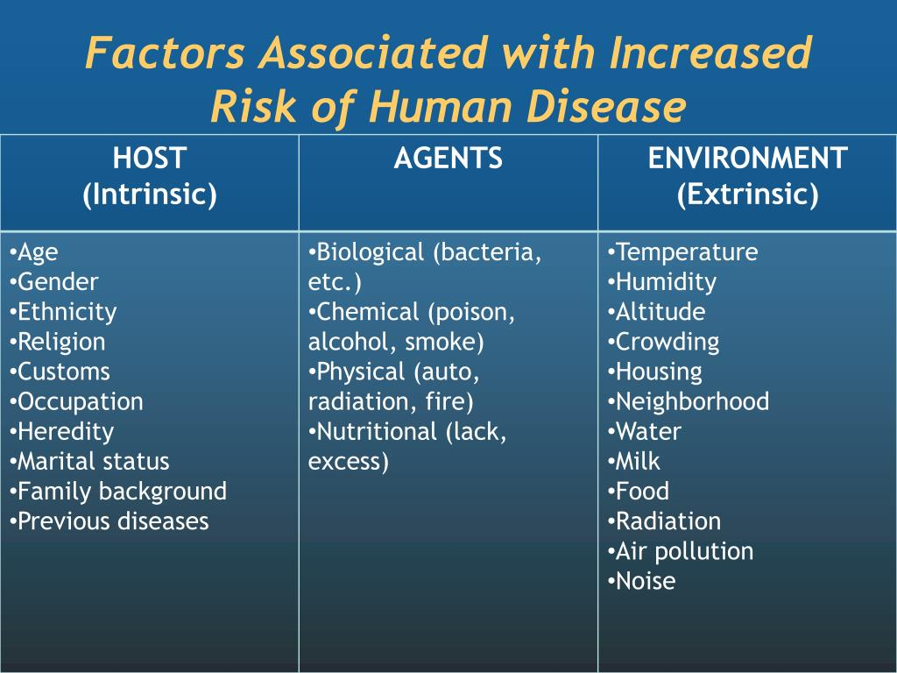

In epidemiology, risk refers to the likelihood, or in statistical language probability,
of an individual in a defined population developing a disease or other adverse health problem.
The prime measures of disease frequency, including probability of outcomes, in epidemiology
are incidence rates and prevalence proportions. The incidence rate is the number of new cases
in relation to a population, time, and place. Prevalence proportion measures all disease or
a risk factor in a population, either at a particular time (point prevalence) or over a time
period (period prevalence, lifetime prevalence). Rates and proportions are most accurately
presented by age and sex groups (‘specific’ rates and proportions), but for ease of
interpretation they may be grouped as overall, actual (crude) rates. The collection of both
disease, risk factor and population data to achieve accurate figures of incidence rates and
prevalence proportions is problematic, and remains a major challenge.
What kind of Risk Factors does epidemiology Explore in?

Epidemiology is a multifaceted field that delves into an extensive
array of risk factors influencing public health outcomes. These factors
span across various domains, including biological, environmental,
behavioral, and socio-economic dimensions. Within the realm of biological
factors, epidemiologists investigate genetic predispositions, underlying
health conditions, and physiological characteristics that may increase
susceptibility to certain diseases. Environmental risk factors encompass
exposures to toxins, pollutants, pathogens, and geographical elements
that can impact health outcomes at both individual and population levels.
Behavioral risk factors, such as diet, physical activity, substance abuse,
and sexual practices, play a pivotal role in shaping disease patterns and
prevalence rates. Socio-economic factors, including income inequality,
access to healthcare, education, and housing conditions, profoundly
influence health disparities and contribute to differential health
outcomes among various demographic groups. By meticulously examining
these risk factors through rigorous data collection and analysis,
epidemiology elucidates the complex interplay between individual behaviors,
social determinants, and environmental exposures, thereby informing
targeted interventions and policy measures aimed at mitigating health
risks and promoting overall well-being.